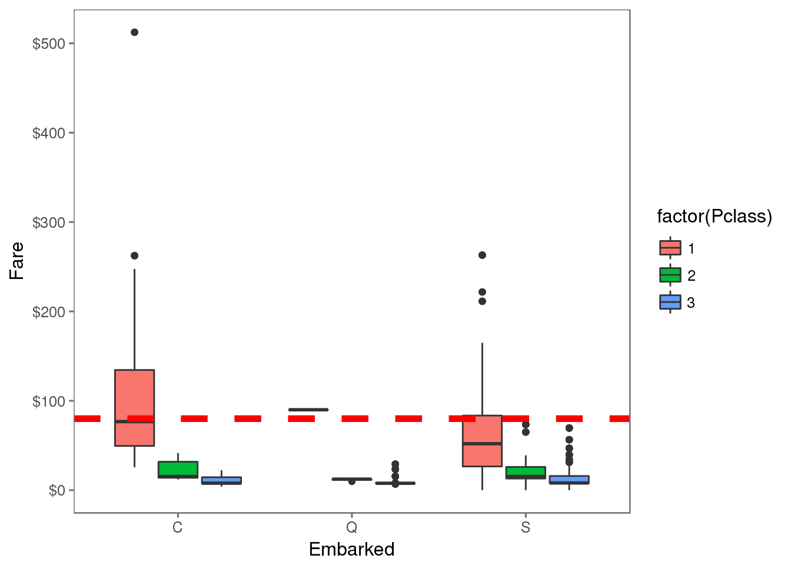
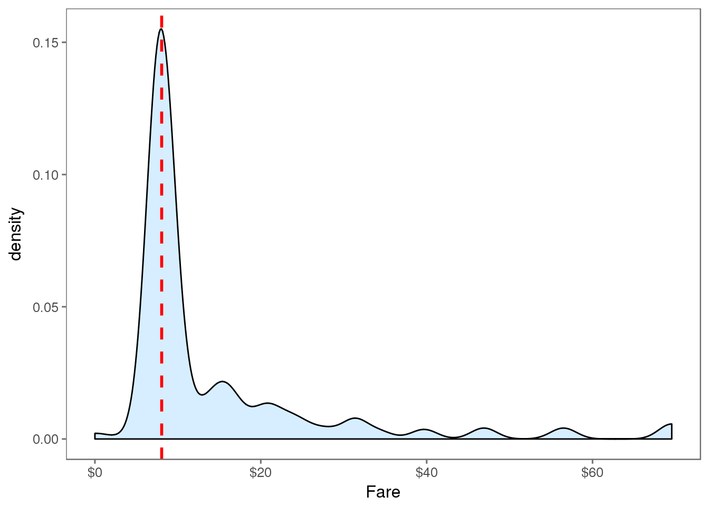
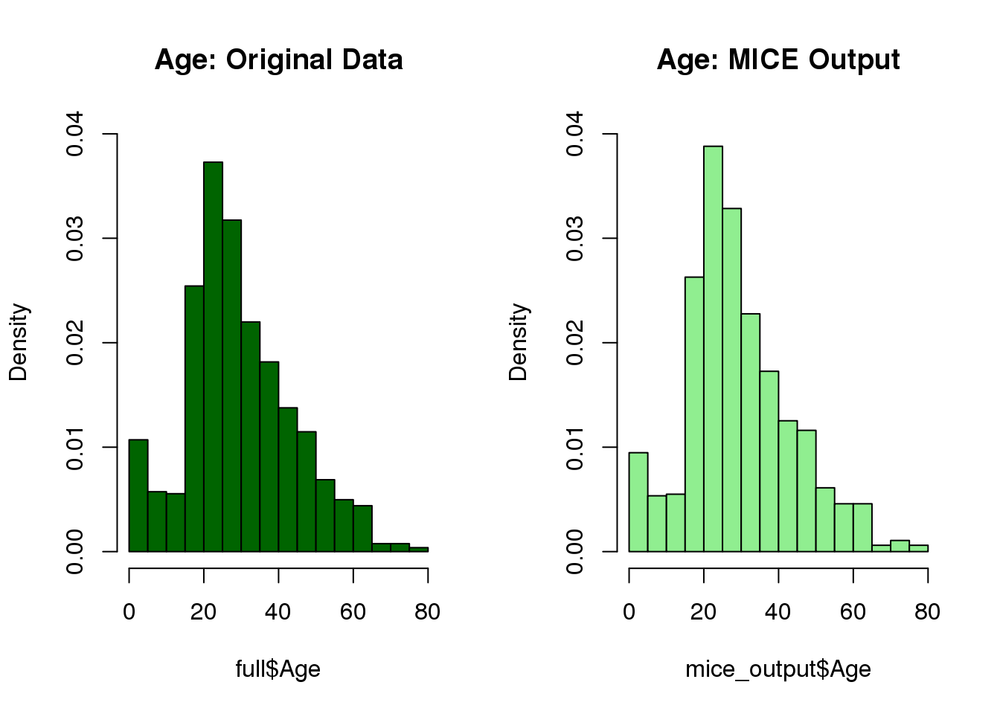
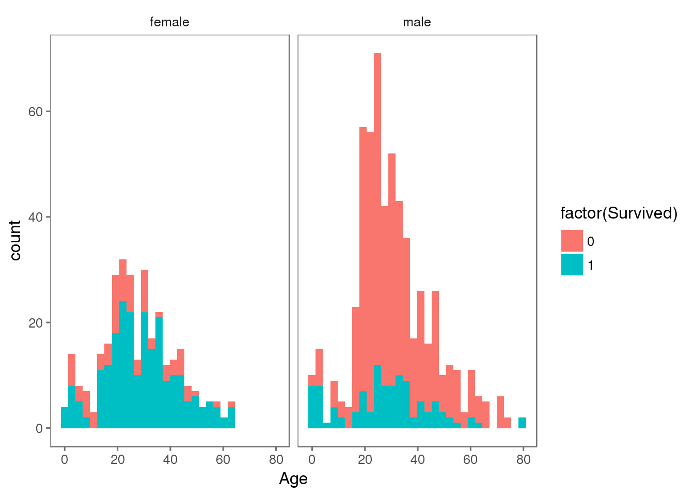
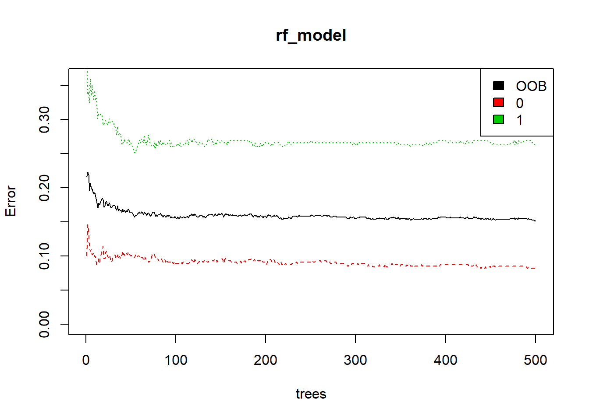
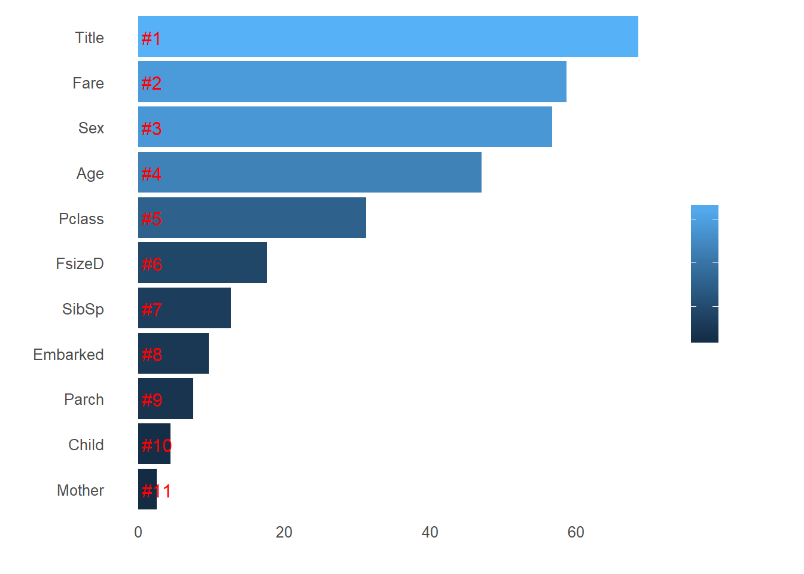

Chapter 4 Getting to work
There is a problem hosted on Kaggle (a platform which hosts many predictive modelling and analytics competitions) knows as the Titanic: Machine Learning from Disaster.
In this competitions, we are asked to predict whether a given set passenger survived or died in the sinking of RMS Titanic.
We’ll now start our walkthrough. All credits for the
4.1 Once upon a time…
The sinking of the RMS Titanic is one of the most infamous shipwrecks in history. On April 15, 1912, during her maiden voyage, the Titanic sank after colliding with an iceberg, killing 1502 out of 2224 passengers and crew. This sensational tragedy shocked the international community and led to better safety regulations for ships.
One of the reasons that the shipwreck led to such loss of life was that there were not enough lifeboats for the passengers and crew. Although there was some element of luck involved in surviving the sinking, some groups of people were more likely to survive than others, such as women, children, and the upper-class.
4.2 Load and check data
# Load packages
# Base Package
library('base')
# Visualization
library('ggplot2')
library('ggthemes')
library('scales')
# Data Manipulation
library('dplyr')
# Imputation
library('mice')
# Classification algorithm
library('randomForest') Now that our packages are loaded, let’s read in and take a peek at the data.
train <- read.csv('./input/train.csv', stringsAsFactors = F)
test <- read.csv('./input/test.csv', stringsAsFactors = F)
full <- bind_rows(train, test) # bind training & test data
# check data
str(full)## 'data.frame': 1309 obs. of 12 variables:
## $ PassengerId: int 1 2 3 4 5 6 7 8 9 10 ...
## $ Survived : int 0 1 1 1 0 0 0 0 1 1 ...
## $ Pclass : int 3 1 3 1 3 3 1 3 3 2 ...
## $ Name : chr "Braund, Mr. Owen Harris" "Cumings, Mrs. John Bradley (Florence Briggs Thayer)" "Heikkinen, Miss. Laina" "Futrelle, Mrs. Jacques Heath (Lily May Peel)" ...
## $ Sex : chr "male" "female" "female" "female" ...
## $ Age : num 22 38 26 35 35 NA 54 2 27 14 ...
## $ SibSp : int 1 1 0 1 0 0 0 3 0 1 ...
## $ Parch : int 0 0 0 0 0 0 0 1 2 0 ...
## $ Ticket : chr "A/5 21171" "PC 17599" "STON/O2. 3101282" "113803" ...
## $ Fare : num 7.25 71.28 7.92 53.1 8.05 ...
## $ Cabin : chr "" "C85" "" "C123" ...
## $ Embarked : chr "S" "C" "S" "S" ...We’ve got a sense of our variables, their class type, and the first few observations of each. We know we’re working with 1309 observations of 12 variables. To make things a bit more explicit since a couple of the variable names aren’t 100% illuminating, here’s what we’ve got to deal with:
4.3 Feature Engineering
4.3.1 What’s in a name?
The first variable which catches my attention is passenger name because we can break it down into additional meaningful variables which can feed predictions or be used in the creation of additional new variables. For instance, passenger title is contained within the passenger name variable and we can use surname to represent families. Let’s do some feature engineering!
# Grab title from passenger names
full$Title <- gsub('(.*, )|(\\..*)', '', full$Name)
# Show title counts by sex
table(full$Sex, full$Title)##
## Capt Col Don Dona Dr Jonkheer Lady Major Master Miss Mlle Mme
## female 0 0 0 1 1 0 1 0 0 260 2 1
## male 1 4 1 0 7 1 0 2 61 0 0 0
##
## Mr Mrs Ms Rev Sir the Countess
## female 0 197 2 0 0 1
## male 757 0 0 8 1 0# Titles with very low cell counts to be combined to "rare" level
rare_title <- c('Dona', 'Lady', 'the Countess','Capt', 'Col', 'Don',
'Dr', 'Major', 'Rev', 'Sir', 'Jonkheer')
# Also reassign mlle, ms, and mme accordingly
full$Title[full$Title == 'Mlle'] <- 'Miss'
full$Title[full$Title == 'Ms'] <- 'Miss'
full$Title[full$Title == 'Mme'] <- 'Mrs'
full$Title[full$Title %in% rare_title] <- 'Rare Title'
# Show title counts by sex again
table(full$Sex, full$Title)##
## Master Miss Mr Mrs Rare Title
## female 0 264 0 198 4
## male 61 0 757 0 25# Finally, grab surname from passenger name
full$Surname <- sapply(full$Name,
function(x) strsplit(x, split = '[,.]')[[1]][1])We have 875 unique surnames. I would be interested to infer ethnicity based on surname — another time.
4.3.2 Do families sink or swim together?
Now that we’ve taken care of splitting passenger name into some new variables, we can take it a step further and make some new family variables. First we’re going to make a family size variable based on number of siblings/spouse(s) (maybe someone has more than one spouse?) and number of children/parents.
# Create a family size variable including the passenger themselves
full$Fsize <- full$SibSp + full$Parch + 1
# Create a family variable
full$Family <- paste(full$Surname, full$Fsize, sep='_')What does our family size variable look like? To help us understand how it may relate to survival, let’s plot it among the training data.
# Use ggplot2 to visualize the relationship between family size & survival
ggplot(full[1:891,], aes(x = Fsize, fill = factor(Survived))) +
geom_bar(stat='count', position='dodge') +
scale_x_continuous(breaks=c(1:11)) +
labs(x = 'Family Size') +
theme_few()
Ah hah. We can see that there’s a survival penalty to singletons and those with family sizes above 4. We can collapse this variable into three levels which will be helpful since there are comparatively fewer large families. Let’s create a discretized family size variable.
# Discretize family size
full$FsizeD[full$Fsize == 1] <- 'singleton'
full$FsizeD[full$Fsize < 5 & full$Fsize > 1] <- 'small'
full$FsizeD[full$Fsize > 4] <- 'large'
# Show family size by survival using a mosaic plot
mosaicplot(table(full$FsizeD, full$Survived), main='Family Size by Survival', shade=TRUE) The mosaic plot shows that we preserve our rule that there’s a survival penalty among singletons and large families, but a benefit for passengers in small families. I want to do something further with our age variable, but 263 rows have missing age values, so we will have to wait until after we address missingness.
The mosaic plot shows that we preserve our rule that there’s a survival penalty among singletons and large families, but a benefit for passengers in small families. I want to do something further with our age variable, but 263 rows have missing age values, so we will have to wait until after we address missingness.
4.3.3 Treat a few more variables …
What’s left? There’s probably some potentially useful information in the passenger cabin variable including about their deck. Let’s take a look.
# This variable appears to have a lot of missing values
full$Cabin[1:28]## [1] "" "C85" "" "C123" ""
## [6] "" "E46" "" "" ""
## [11] "G6" "C103" "" "" ""
## [16] "" "" "" "" ""
## [21] "" "D56" "" "A6" ""
## [26] "" "" "C23 C25 C27"# The first character is the deck. For example:
strsplit(full$Cabin[2], NULL)[[1]]## [1] "C" "8" "5"# Create a Deck variable. Get passenger deck A - F:
full$Deck<-factor(sapply(full$Cabin, function(x) strsplit(x, NULL)[[1]][1]))There’s more that likely could be done here including looking into cabins with multiple rooms listed (e.g., row 28: “C23 C25 C27”), but given the sparseness of the column we’ll stop here.
4.4 Missingness
Now we’re ready to start exploring missing data and rectifying it through imputation. There are a number of different ways we could go about doing this. Given the small size of the dataset, we probably should not opt for deleting either entire observations (rows) or variables (columns) containing missing values. We’re left with the option of either replacing missing values with a sensible values given the distribution of the data, e.g., the mean, median or mode. Finally, we could go with prediction. We’ll use both of the two latter methods and I’ll rely on some data visualization to guide our decisions.
4.4.1 Sensible value imputation
# Passengers 62 and 830 are missing Embarkment
full[c(62, 830), 'Embarked']## [1] "" ""## We will infer their values for **embarkment** based on present data that we can imagine may be relevant: **passenger class** and **fare**. We see that they paid<b> $ 80 </b>and<b> $ NA </b>respectively and their classes are<b> 1 </b>and<b> NA </b>. So from where did they embark?# Get rid of our missing passenger IDs
embark_fare <- full %>%
filter(PassengerId != 62 & PassengerId != 830)
# Use ggplot2 to visualize embarkment, passenger class, & median fare
ggplot(embark_fare, aes(x = Embarked, y = Fare, fill = factor(Pclass))) +
geom_boxplot() +
geom_hline(aes(yintercept=80),
colour='red', linetype='dashed', lwd=2) +
scale_y_continuous(labels=dollar_format()) +
theme_few() Voilà! The median fare for a first class passenger departing from Charbourg (‘C’) coincides nicely with the $80 paid by our embarkment-deficient passengers. I think we can safely replace the NA values with ‘C’.
# Since their fare was $80 for 1st class, they most likely embarked from 'C'
full$Embarked[c(62, 830)] <- 'C'We’re close to fixing the handful of NA values here and there. Passenger on row 1044 has an NA Fare value.
# Show row 1044
full[1044, ]## PassengerId Survived Pclass Name Sex Age SibSp Parch
## 1044 1044 NA 3 Storey, Mr. Thomas male 60.5 0 0
## Ticket Fare Cabin Embarked Title Surname Fsize Family FsizeD
## 1044 3701 NA S Mr Storey 1 Storey_1 singleton
## Deck
## 1044 <NA>This is a third class passenger who departed from Southampton (‘S’). Let’s visualize Fares among all others sharing their class and embarkment (n = 494).
ggplot(full[full$Pclass == '3' & full$Embarked == 'S', ],
aes(x = Fare)) +
geom_density(fill = '#99d6ff', alpha=0.4) +
geom_vline(aes(xintercept=median(Fare, na.rm=T)),
colour='red', linetype='dashed', lwd=1) +
scale_x_continuous(labels=dollar_format()) +
theme_few()
From this visualization, it seems quite reasonable to replace the NA Fare value with median for their class and embarkment which is $8.05.
# Replace missing fare value with median fare for class/embarkment
full$Fare[1044] <- median(full[full$Pclass == '3' & full$Embarked == 'S', ]$Fare, na.rm = TRUE)4.4.2 Predictive imputation
Finally, as we noted earlier, there are quite a few missing Age values in our data. We are going to get a bit more fancy in imputing missing age values. Why? Because we can. We will create a model predicting ages based on other variables.
# Show number of missing Age values
sum(is.na(full$Age))## [1] 263We could definitely use rpart (recursive partitioning for regression) to predict missing ages, but I’m going to use the mice package for this task just for something different. You can read more about multiple imputation using chained equations in r here (PDF). Since we haven’t done it yet, I’ll first factorize the factor variables and then perform mice imputation.
# Make variables factors into factors
factor_vars <- c('PassengerId','Pclass','Sex','Embarked',
'Title','Surname','Family','FsizeD')
full[factor_vars] <- lapply(full[factor_vars], function(x) as.factor(x))
# Set a random seed
set.seed(129)
# Perform mice imputation, excluding certain less-than-useful variables:
mice_mod <- mice(full[, !names(full) %in% c('PassengerId','Name','Ticket','Cabin','Family','Surname','Survived')], method='rf') ##
## iter imp variable
## 1 1 Age Deck
## 1 2 Age Deck
## 1 3 Age Deck
## 1 4 Age Deck
## 1 5 Age Deck
## 2 1 Age Deck
## 2 2 Age Deck
## 2 3 Age Deck
## 2 4 Age Deck
## 2 5 Age Deck
## 3 1 Age Deck
## 3 2 Age Deck
## 3 3 Age Deck
## 3 4 Age Deck
## 3 5 Age Deck
## 4 1 Age Deck
## 4 2 Age Deck
## 4 3 Age Deck
## 4 4 Age Deck
## 4 5 Age Deck
## 5 1 Age Deck
## 5 2 Age Deck
## 5 3 Age Deck
## 5 4 Age Deck
## 5 5 Age Deck# Save the complete output
mice_output <- complete(mice_mod)Let’s compare the results we get with the original distribution of passenger ages to ensure that nothing has gone completely awry.
# Plot age distributions
par(mfrow=c(1,2))
hist(full$Age, freq=F, main='Age: Original Data',
col='darkgreen', ylim=c(0,0.04))
hist(mice_output$Age, freq=F, main='Age: MICE Output',
col='lightgreen', ylim=c(0,0.04))
Things look good, so let’s replace our age vector in the original data with the output from the mice model.
# Replace Age variable from the mice model.
full$Age <- mice_output$Age
# Show new number of missing Age values
sum(is.na(full$Age))## [1] 0We’ve finished imputing values for all variables that we care about for now! Now that we have a complete Age variable, there are just a few finishing touches I’d like to make. We can use Age to do just a bit more feature engineering …
4.4.3 Feature Engineering: Round 2
Now that we know everyone’s age, we can create a couple of new age-dependent variables: Child and Mother. A child will simply be someone under 18 years of age and a mother is a passenger who is 1) female, 2) is over 18, 3) has more than 0 children (no kidding!), and 4) does not have the title ‘Miss’.
# First we'll look at the relationship between age & survival
ggplot(full[1:891,], aes(Age, fill = factor(Survived))) +
geom_histogram() +
# I include Sex since we know (a priori) it's a significant predictor
facet_grid(.~Sex) +
theme_few()
# Create the column child, and indicate whether child or adult
full$Child[full$Age < 18] <- 'Child'
full$Child[full$Age >= 18] <- 'Adult'
# Show counts
table(full$Child, full$Survived)##
## 0 1
## Adult 484 274
## Child 65 68Looks like being a child doesn’t hurt, but it’s not going to necessarily save you either! We will finish off our feature engineering by creating the Mother variable. Maybe we can hope that mothers are more likely to have survived on the Titanic.
# Adding Mother variable
full$Mother <- 'Not Mother'
full$Mother[full$Sex == 'female' & full$Parch > 0 & full$Age > 18 & full$Title != 'Miss'] <- 'Mother'
# Show counts
table(full$Mother, full$Survived)##
## 0 1
## Mother 16 39
## Not Mother 533 303# Finish by factorizing our two new factor variables
full$Child <- factor(full$Child)
full$Mother <- factor(full$Mother)All of the variables we care about should be taken care of and there should be no missing data. I’m going to double check just to be sure:
md.pattern(full)## Warning in data.matrix(x): NAs introduced by coercion
## Warning in data.matrix(x): NAs introduced by coercion
## Warning in data.matrix(x): NAs introduced by coercion## PassengerId Pclass Sex Age SibSp Parch Fare Embarked Title Surname
## 150 1 1 1 1 1 1 1 1 1 1
## 61 1 1 1 1 1 1 1 1 1 1
## 54 1 1 1 1 1 1 1 1 1 1
## 511 1 1 1 1 1 1 1 1 1 1
## 30 1 1 1 1 1 1 1 1 1 1
## 235 1 1 1 1 1 1 1 1 1 1
## 176 1 1 1 1 1 1 1 1 1 1
## 92 1 1 1 1 1 1 1 1 1 1
## 0 0 0 0 0 0 0 0 0 0
## Fsize Family FsizeD Child Mother Ticket Survived Deck Name Cabin
## 150 1 1 1 1 1 1 1 1 0 0 2
## 61 1 1 1 1 1 1 0 1 0 0 3
## 54 1 1 1 1 1 0 1 1 0 0 3
## 511 1 1 1 1 1 1 1 0 0 0 3
## 30 1 1 1 1 1 0 0 1 0 0 4
## 235 1 1 1 1 1 1 0 0 0 0 4
## 176 1 1 1 1 1 0 1 0 0 0 4
## 92 1 1 1 1 1 0 0 0 0 0 5
## 0 0 0 0 0 352 418 1014 1309 1309 4402Wow! We have finally finished treating all of the relevant missing values in the Titanic dataset which has included some fancy imputation with mice. We have also successfully created several new variables which we hope will help us build a model which reliably predicts survival.
4.5 Prediction
At last we’re ready to predict who survives among passengers of the Titanic based on variables that we carefully curated and treated for missing values. For this, we will rely on the randomForest classification algorithm; we spent all that time on imputation, after all.
4.5.1 Split into training & test sets
Our first step is to split the data back into the original test and training sets.
# Split the data back into a train set and a test set
train <- full[1:891,]
test <- full[892:1309,]4.5.2 Building the model
We then build our model using randomForest on the training set.
# Set a random seed
set.seed(754)
# Build the model (note: not all possible variables are used)
rf_model <- randomForest(factor(Survived) ~ Pclass + Sex + Age + SibSp + Parch +
Fare + Embarked + Title +
FsizeD + Child + Mother,
data = train)
# Show model error
plot(rf_model, ylim=c(0,0.36))
legend('topright', colnames(rf_model$err.rate), col=1:3, fill=1:3)
The black line shows the overall error rate which falls below 20%. The red and green lines show the error rate for ‘died’ and ‘survived’ respectively. We can see that right now we’re much more successful predicting death than we are survival. What does that say about me, I wonder?
4.5.3 Variable importance
Let’s look at relative variable importance by plotting the mean decrease in Gini calculated across all trees.
# Get importance
importance <- importance(rf_model)
varImportance <- data.frame(Variables = row.names(importance),
Importance = round(importance[ ,'MeanDecreaseGini'],2))
# Create a rank variable based on importance
rankImportance <- varImportance %>%
mutate(Rank = paste0('#',dense_rank(desc(Importance))))
# Use ggplot2 to visualize the relative importance of variables
ggplot(rankImportance, aes(x = reorder(Variables, Importance),
y = Importance, fill = Importance)) +
geom_bar(stat='identity') +
geom_text(aes(x = Variables, y = 0.5, label = Rank),
hjust=0, vjust=0.55, size = 4, colour = 'red') +
labs(x = 'Variables') +
coord_flip() +
theme_few()
Whoa, glad we made our title variable! It has the highest relative importance out of all of our predictor variables. I think I’m most surprised to see that passenger class fell to #5, but maybe that’s just bias coming from watching the movie Titanic too many times as a kid.
4.5.4 Prediction!
We’re ready for the final step — making our prediction! When we finish here, we could iterate through the preceding steps making tweaks as we go or fit the data using different models or use different combinations of variables to achieve better predictions. But this is a good starting (and stopping) point for me now.
# Predict using the test set
prediction <- predict(rf_model, test)
# Save the solution to a dataframe with two columns: PassengerId and Survived (prediction)
solution <- data.frame(PassengerID = test$PassengerId, Survived = prediction)
# Write the solution to file
write.csv(solution, file = 'rf_mod_Solution.csv', row.names = F)